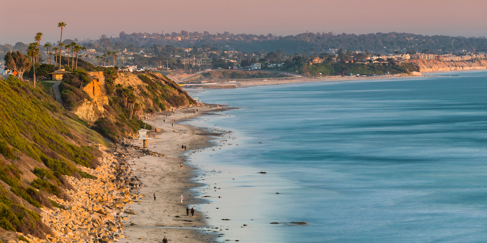

Although Winter is argued to be the best season, many feel that Summer is no doubt the best season out of the four. In summer there are so many available activities such as going to the beach, hiking, swimming, and so much more. A huge summer tourist destination is San Diego, CA, which is where I am from. Many people travel to San Diego during the summer to see the beautiful beaches and amazing sunsets. Pictured below is San Elijo State Beach which is approximately 30-40 minutes north of downtown San Diego.
